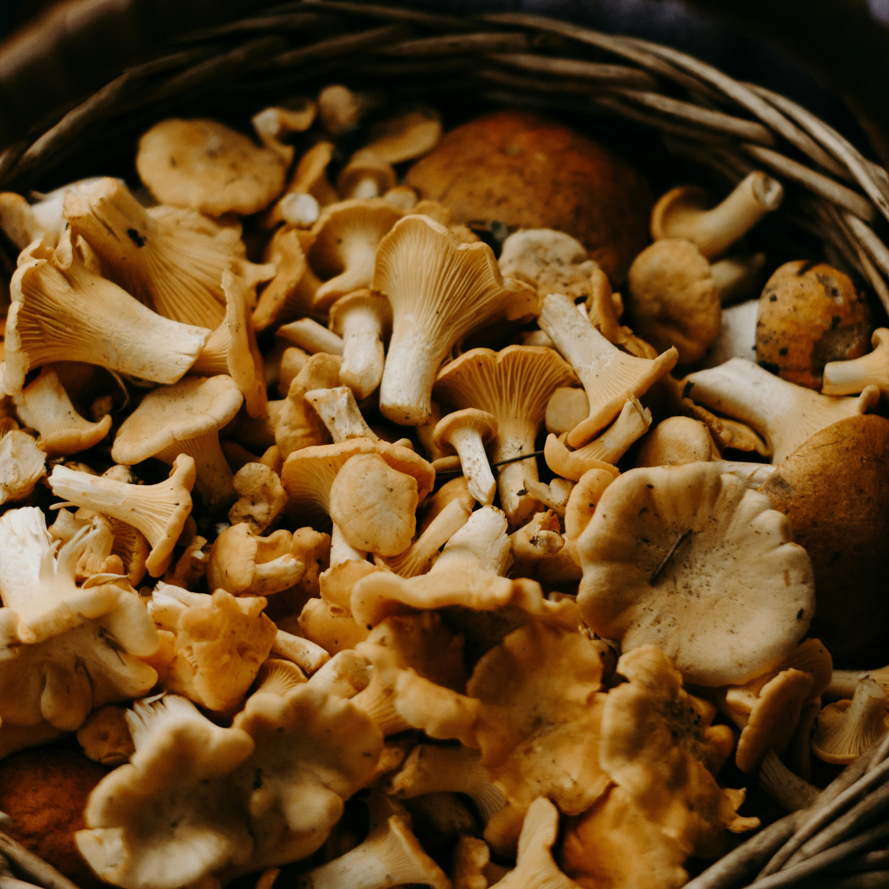

🍄Mushroompedia
🔗About Mushrooms
🔗Mushroom Atlas
🔗Recipes
🔗Contact
Discover the Fascinating World of Mushrooms!
Mushrooms are incredible organisms full of secrets. Learn which ones are edible, which are poisonous, and what unique properties they have!
🔠Explore
Mushroom Fun Facts
Porcini Mushroom
- The king of the forest, tasty and aromatic.
Fly Agaric
- A fairytale-like mushroom, but toxic!
Champignon
- Popular in cooking, easy to grow.

Chanterelle
- Fragrant, loved by chefs, popular in cooking.
"Mushrooms are among the most mysterious organisms on our planet. They grow in secret but have incredible power."
— Master Mycologist
Join the Mushroom Enthusiasts Community!
Don’t miss the best mushroom-picking seasons and new recipes!
Sign up for our newsletter